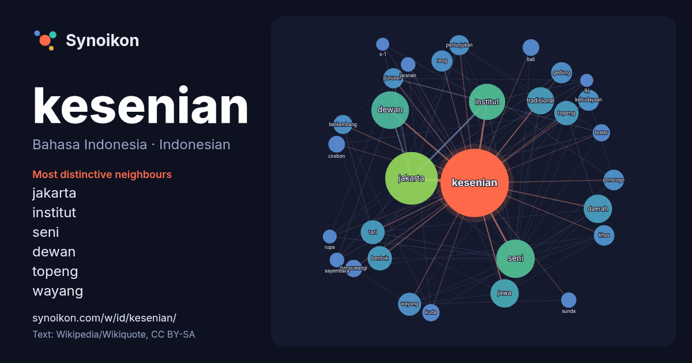

Bahasa Indonesia · Indonesian · popular word
kesenian
“art” · The words found around it in 711 instances from Indonesian Wikipedia, Wikiquote.

Most distinctive neighbours
- jakarta 55×
- institut 50×
- seni 33×
- dewan 32×
- topeng 26×
- wayang 22×
- reog 21×
- ponorogo 20×
- tari 20×
- tradisional 20×
- jawa 15×
- jurusan 15×
- kebudayaan 14×
- banyuwangi 14×
- pertunjukan 13×
- khas 13×
- cirebon 12×
- gedung 12×
- kuda 11×
- jaranan 11×
× = how many times more often than in general Indonesian Wikipedia text.
Most frequent neighbours
- jakarta 130
- seni 70
- dewan 67
- institut 62
- daerah 38
- jawa 38
- indonesia 35
- tradisional 35
- salah 29
- bentuk 28
- topeng 28
- tari 27
- wayang 25
- jenis 22
- berasal 21
- gedung 21
- kebudayaan 21
- memiliki 21
- reog 21
- khas 20
In context
- Kesenian, atau seni kreatif, merupakan ranah luas dari berbagai praktik manusia yang melibatkan ekspresi kreatif, penceritaan, serta partisipasi budaya Wikipedia snippets · Kesenian
- populer, khususnya buku Seni lukis, kesenian, dan seniman yang terbit pertama kali 1946. Bentuk kesenian tertua yang ditemukan adalah seni rupa, yang meliputi Wikipedia snippets · Seni
- disampaikan oleh para seniman yang tergabung dalam Dewan Kesenian Jakarta, sebuah dewan kesenian yang pendiriannya juga difasilitasi oleh Gubernur Ali Sadikin Wikipedia snippets · Institut Kesenian Jakarta
- Sebagai salah satu sekolah seni tertua di Indonesia, Institut Kesenian Jakarta telah melahirkan tenaga ahli terutama di bidang seni. Alumni IKJ umumnya terkenal Wikipedia snippets · Daftar alumni Institut Kesenian Jakarta
- egaliter dan terbuka. Surabaya dikenal memiliki beberapa kesenian khas, yaitu: Ludruk, adalah seni pertunjukan drama yang menceritakan kehidupan rakyat sehari-hari Wikipedia snippets · Kota Surabaya
- swargaloka. Secara artistik, seni Gupta dan kesenian Hindu merupakan dua inspirasi yang paling kuat memengaruhi kesenian Tibet. Seni lukis mencapai tingkatan Wikipedia snippets · Seni rupa buddhis
- lebar Ali Topan Anak Jalanan pada tahun 1977. Kecintaan Guruh pada dunia kesenian juga ditunjukkan dengan mendirikan organisasi pemuda bernama Swara Maharddhika Wikipedia snippets · Guruh Soekarnoputra
- dikemas secara komedi. Barongan Kesenian Barongan adalah kesenian khas Tegal yang memiliki bentuk serupa dengan kesenian Buroq di Cirebon atau Sisingaan Wikipedia snippets · Kota Tegal
More Indonesian words
- air
- anjing
- bahasa
- emas
- iklim
- jantung
- jembatan
- kebenaran
- kehidupan
- kekuasaan
- keluarga
- kematian
- kereta
- kerja
- kesehatan
- kucing
- lingkungan
- makanan
- sains
- sejarah
- tuhan
- uang
Precomputed on 2026-10-09 with default settings (±5 words, medium corpus). The interactive map can refresh it with live data.